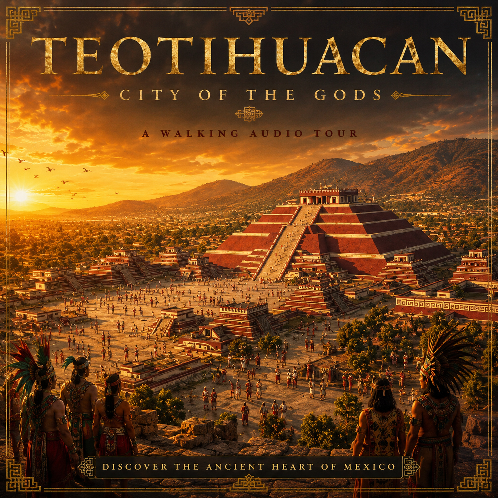

Teotihuacan
City of the Gods
A private, self-guided audio tour of Teotihuacan. Add the show to Apple Podcasts, download the episodes, and play each stop as you explore the ancient city.
Add to Apple Podcasts
- Tap Copy RSS Feed URL below.
- Open Apple Podcasts.
- Go to Library, tap •••, then choose Follow a Show by URL.
- Paste the copied address and tap Follow.
Private RSS Feed
https://mau949.github.io/teotihuacan-audio-tour/feed-v2.xml
⬇️
Before the tour: download all episodes in Apple Podcasts so the entire tour works offline at Teotihuacan.
This is an unlisted private feed. It is not submitted to the public Apple Podcasts directory. Anyone who receives the RSS address can still add it manually.